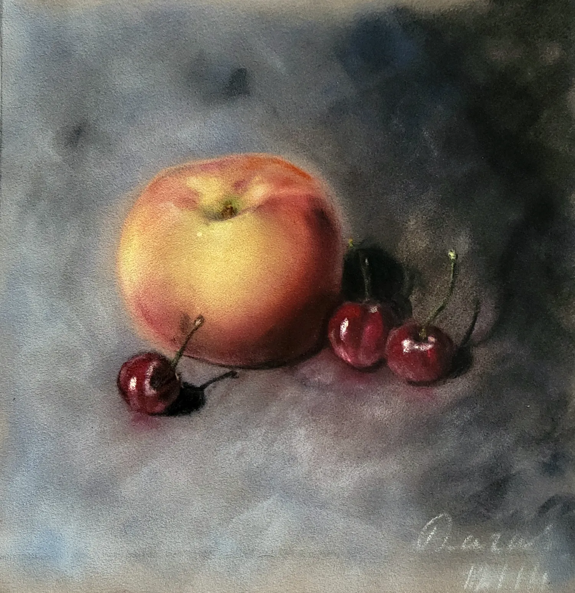

Pêche et cerises
Pêche et cerises est une étude de lumière et de matière réalisée au pastel sec sur papier velours. La douceur du fruit principal contraste avec l'éclat vernissé des cerises, tandis que le fond volontairement estompé laisse toute la place aux volumes et aux nuances. Cette nature morte rend hommage à la simplicité des sujets du quotidien. Sans artifice narratif, elle invite à contempler les textures, les couleurs et le silence qui émane des objets ordinaires. Le pastel permet ici de restituer le velouté de la pêche, le reflet des cerises et une atmosphère calme, presque suspendue. Réalisée en 2014, cette œuvre témoigne des premières recherches de Daras autour de la lumière diffuse et de la délicatesse des transitions, thèmes qui continueront à traverser son travail.
Demander des informations →← Retour à la galerie